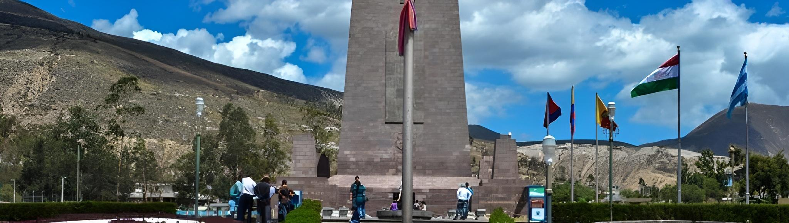
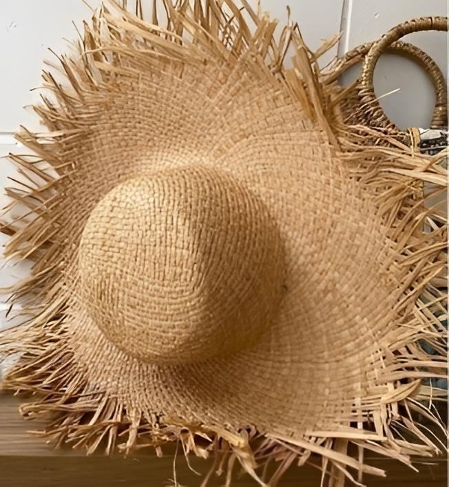
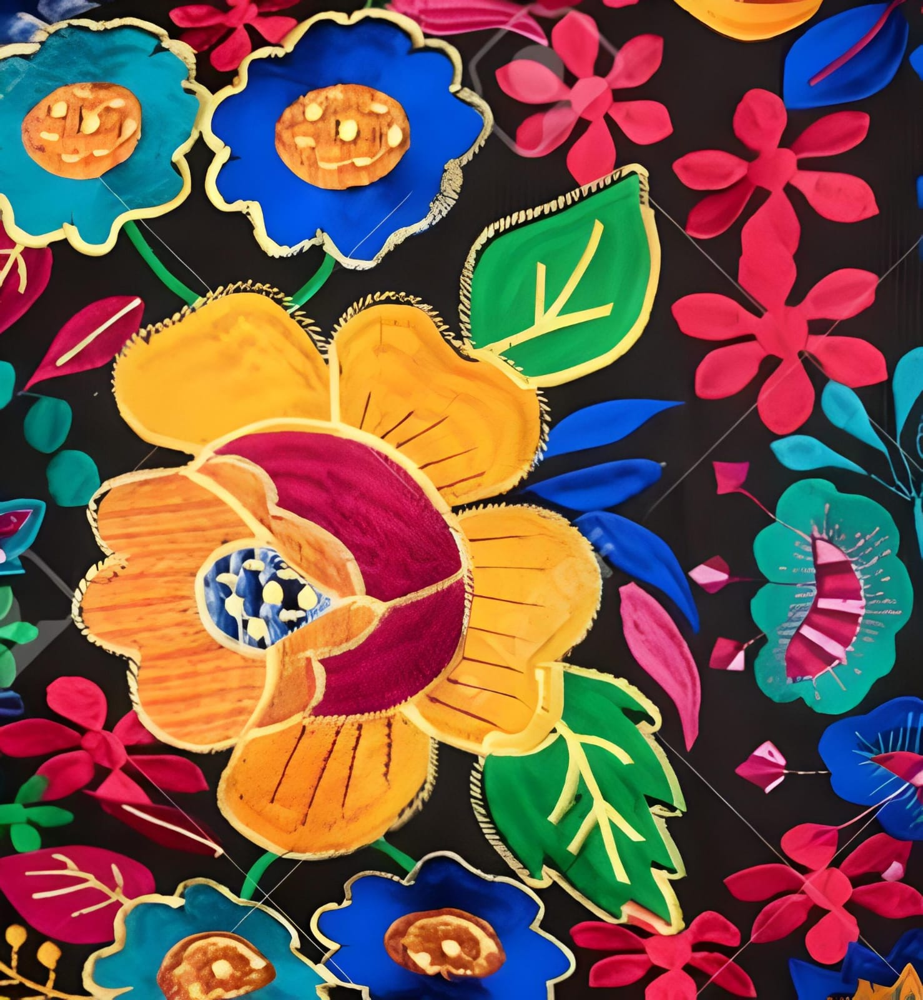
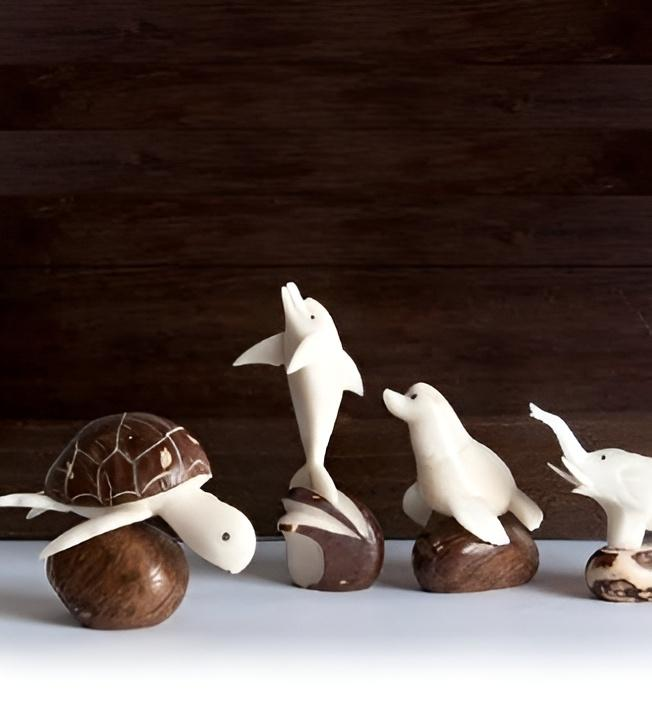

Ecuador
Ecuador es un país reconocido por su impresionante riqueza cultural, especialmente reflejada en sus artesanías tradicionales. Cada región del país aporta creaciones únicas que narran historias ancestrales y expresan la identidad de sus comunidades. En los Andes, los tejidos de lana de alpaca y oveja destacan por sus colores vibrantes y patrones simbólicos, mientras que en la Costa las artesanías de tagua, conocida como "marfil vegetal", impresionan por su delicadeza.
Artículos
Sombrero toquilla
La paja toquilla se cultiva en las regiones costeras y montañosas de Ecuador, en especial en Manabí, Santa Elena, Azuay y Cañar. El sombrero se teje con las fibras de esta palmera.
Los agricultores cultivan los toquillales y recogen los tallos para luego separar la fibra de la corteza verde, hirviéndola para eliminar la clorofila y secándola después con carbón de leña y azufre para que se blanquee.
Nombre: Beatrice Martínez
Correo electrónico: beremtzlima@yahoo.com
Tejidos de Otavalo
Los tejidos de Otavalo se producen en el cantón Otavalo, ubicado en la provincia de Imbabura, en el norte de Ecuador. Estos tejidos son productos artesanales y textiles de la comunidad indígena kichwa otavalo de Ecuador. Son conocidos por su colorido, simbolismo y detalle.
Nombre: Luis Montero
Correo electrónico: luis_arte@hotmail.com
Figuras de tagua
Las artesanías de tagua son un elemento representativo de la cultura y el arte tradicional en Ecuador. La tagua, conocida como el "marfil vegetal", es la semilla de la palma Phytelephas, que crece principalmente en las zonas tropicales del país, especialmente en Manabí y Esmeraldas.
Nombre: Sergio Velázquez
Correo electrónico: artesaniaserg@yahoo.com